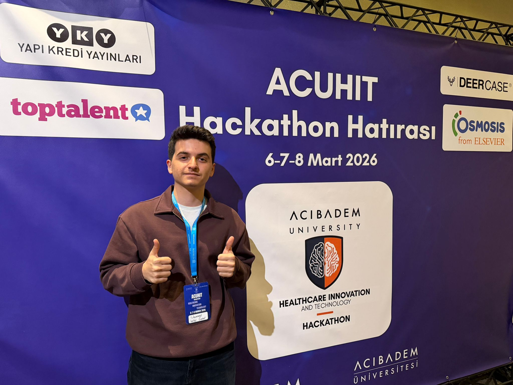
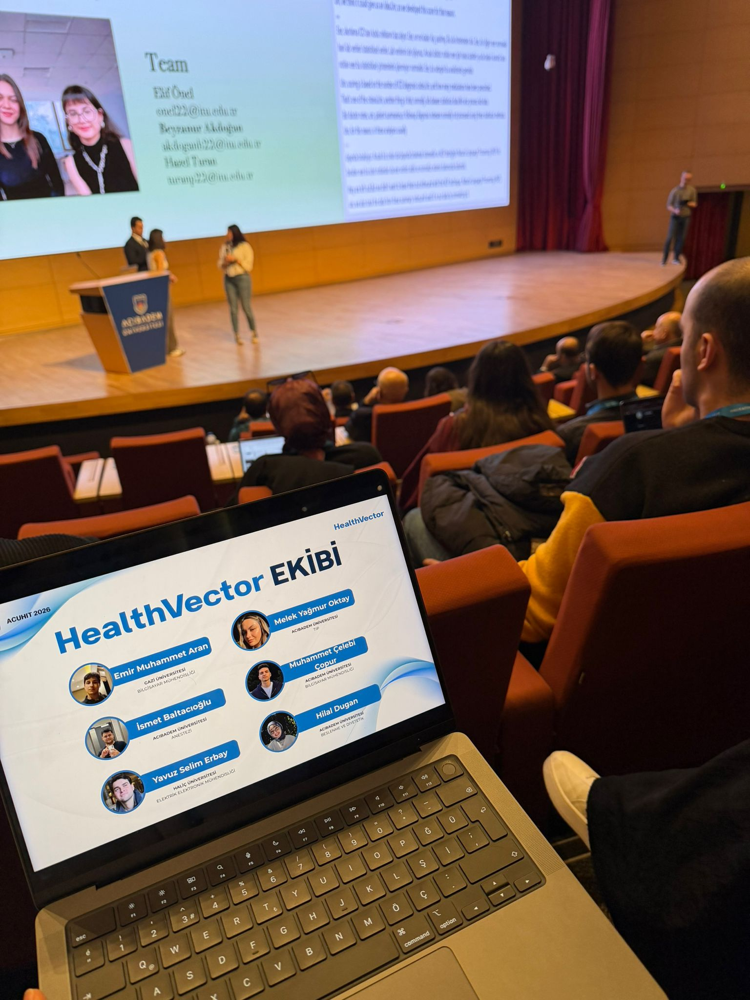

> Initializing Eco-OS v2.0...
> Loading Environmental Sensors...
> Welcome, System Architect Muhammet.
_
I am 20 years old, originally from Gaziantep, and currently living in the vibrant city of Istanbul.
1st-year Environmental Engineering student at Istanbul Technical University (İTÜ). Successfully completed my English prep year at Acıbadem University before transferring.
I am a regular, disciplined, and clear person. I value order and straightforward communication in everything I do.
I thrive in collaborative environments and work excellently within a team.
A strong sense of self-management and regularity in my daily routines.
I can easily manage and guide other people, providing clear direction and structure.
I communicate and act with absolute clarity, avoiding ambiguity.

Participated in exciting hackathons (including at Acıbadem University), developing my coding and teamwork skills.

Collaborated with awesome teams to brainstorm and develop systems that merge engineering with real-world problems.
Merging software with environmental engineering.
In the future, I want to focus my career on Green Technology (EcoTech). The intersection of software development and environmental science is where true sustainable innovations happen.
My goal is to bring my discipline and team-management skills to develop systems that improve sustainability, smart cities, and green infrastructure.